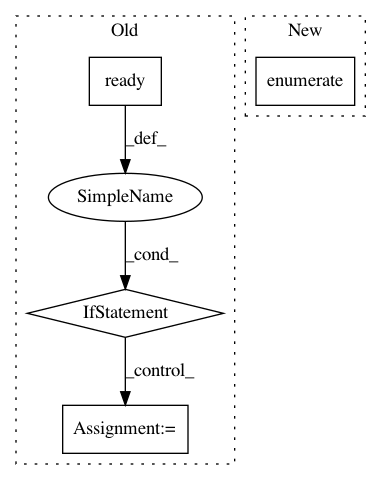

9a3277aa76f7b8374de002e6c72bff142b594cf7,ilastik/applets/featureSelection/featureSelectionGui.py,FeatureSelectionGui,setupLayers,#FeatureSelectionGui#Any#,114
Before Change
outputSlot = self.mainOperator.FeatureLayers[currentImageIndex]
layerNameSlot = self.mainOperator.FeatureNames[currentImageIndex]
if outputSlot.ready() and layerNameSlot.ready() and len(outputSlot) == len(layerNameSlot.value):
// Now add a layer for each feature
numFeatureChannels = len(outputSlot)
for featureChannelIndex in range(0, numFeatureChannels):
layer = self.getFeatureLayer(currentImageIndex, featureChannelIndex)
layers.append( layer )
return layers
def getFeatureLayer(self, currentImageIndex, featureChannelIndex):
After Change
inputSlot = self.mainOperator.InputImage[currentImageIndex]
featureMultiSlot = self.mainOperator.FeatureLayers[currentImageIndex]
if featureMultiSlot.ready():
for featureIndex, featureSlot in enumerate(featureMultiSlot):
assert featureSlot.ready()
layers += self.getFeatureLayers(inputSlot, featureSlot)
In pattern: SUPERPATTERN
Frequency: 3
Non-data size: 4
Instances
Project Name: ilastik/ilastik
Commit Name: 9a3277aa76f7b8374de002e6c72bff142b594cf7
Time: 2012-08-21
Author: bergs@janelia.hhmi.org
File Name: ilastik/applets/featureSelection/featureSelectionGui.py
Class Name: FeatureSelectionGui
Method Name: setupLayers
Project Name: ilastik/ilastik
Commit Name: b5f93de4836569c02c07e45bd1c947c5c0b9b662
Time: 2018-12-11
Author: tomaz.vieira@embl.de
File Name: ilastik/applets/thresholdTwoLevels/thresholdTwoLevelsGui.py
Class Name: ThresholdTwoLevelsGui
Method Name: _updateGuiFromOperator
Project Name: ilastik/ilastik
Commit Name: e8767fed61e6180b9ea3a1849c59533cd4ae0417
Time: 2014-05-08
Author: webmaster@burgerdev.de
File Name: ilastik/applets/thresholdTwoLevels/thresholdTwoLevelsGui.py
Class Name: ThresholdTwoLevelsGui
Method Name: setupLayers